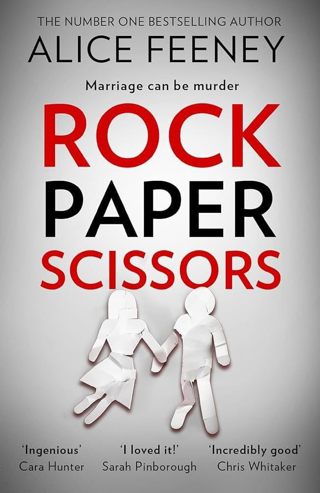

"Rock Paper Scissors" by Alice Feeney

Adam, a workaholic and famous screenwriter with faceblindness, and his wife, Amelia, a worker at a dog shelter, have been experiencing marital problems. Adam seems only to be focused on his work nowadays, and Amelia is tired of not being seen by her husband. When Amelia wins a free weekend away to a chapel-turned-home in Scotland, she decides it might just help them fix their marriage. However, fixing a relationship is harder when no one is telling the truth.
Review:
I would love to give kudos to this book and the author for the way the characters were written. Right off the bat, it is obvious that they aren't perfect. They have many flaws, and at times, it is very difficult to choose who to root for. Characters like these should be more common, even if they aren't the best of people.
That being said, the book was good at best and tiring at worst. The premise and plot of the book are amazing; however, there are only so many plot twists that can happen until your "Oh. My. God. That happened?" turns into "Another twist? Why?" Almost all of the book is covered with plot twists, and although I do understand that the alternative of "info dumping" at the beginning of the book isn't the best, having an overflowing amount of plot twists throughout the entirety of the book is not the better option.
I will admit that I like that the book wasn't easily predictable. However, the reason why it was so unpredictable was due to the amount of plot twists and reveals in the book. Even when you think there isn't anything else to reveal, that everything is tied up in a nice and neat bow, you get even more plot twists that honestly seem unnecessary or out of place. The ending was just straight out unsatisfying. Because of all the sprinkled-in plot twists, reveals, and the characters withholding so much information, you start to realize what you knew about the book or the plot is no longer that, and it is almost something else entirely.
I remember that before finding out the full story and the plot twists, I started to think that the book was probably written all in one go without much editing for the plot. Having your reader in the dark for the whole book might just do that. Besides these plot twists, there are also quite a handful of loose threads. I will not get into them due to spoilers, but it is still important to note if you want to read the book.
The beginning was great, and getting to know the characters was amazing because there wasn't one truly bad character and one truly good one, but the second half was just tiring and unsatisfying to read.
If you like this book, try . . .
You should give this book a try if you like thrillers (of course) and if you like books where you won't know what will happen next, aka aren't easy to solve.
Filed under Thriller